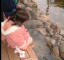
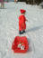

2002年3月2日 17時42分撮影
毎年お雛さんと一緒に「ハイ、ポーズ！」 大きくなったよね。。。
＜ご参考＞初節句：No２６、２歳：No１７２
2002年2月17日 11時9分撮影
城崎駅前の温泉入口にて。
一年前もここのかえるちゃんを喜んで眺めましたね。2002年2月16日 16時32分撮影
佐津の民宿から徒歩数分の海岸へお散歩。その途中で「雪」
発見。。。「雪ダルマ作るぅ〜」その場を離れない由起子です。2002年2月3日 20時7分撮影
今日は節分。保育所で作ったお面をつけて、手にはお豆さん。
「オニワーソトォー」「フクワーウチー」みんなで豆撒きをしました。2002年1月26日 10時8分撮影
マラソン大会の後、こんなメダルをもらいましたぁ。。。
ジャーン！2002年1月13日 14時26分撮影
ソリ遊びのあとは雪遊び。。。あちこちの雪ダルマを見て、
「ユキも雪ダルマさん作るネン」と、一生懸命です。
2002年1月13日 14時02分撮影
由起子初めてのスキー場：ソリ遊び【穏やかなお天気の
おかげもあって、スキー場デビューは無事成功しました】2002年1月5日 13時09分撮影
天理さんの「おせち」。由起子はほぼ一人前食べました。2002年1月1日 10時22分撮影
朝のお散歩。。。海がとっても綺麗です。2002年1月1日 9時15分撮影
新年明けましておめでとうございます。
ネェネェたちと一緒に、白浜保養所でお正月を迎えました。